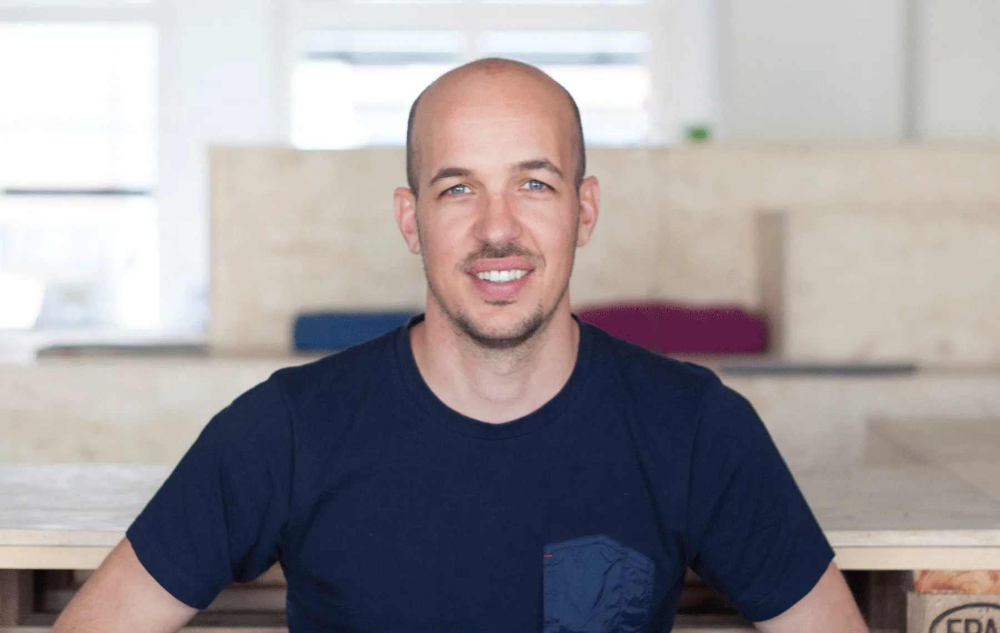

Über mich
Führung ist für mich keine Position, sondern Haltung.
Zwanzig Jahre an der Schnittstelle von Mensch, Produkt und Technologie haben mir eines klar gemacht: Wirkung entsteht durch Klarheit, Vertrauen und konsequentes Tun.
Ich bringe AI in Organisationen, strategisch verankert, operativ wirksam. Als AI Transformation Leader verbinde ich Business, Technologie und Menschen so, dass Initiativen nicht nur starten, sondern echten Wert schaffen. Seit 2026 bin ich bei AXA Schweiz als AI Experience Lead in der Data & AI Division tätig, treibe CX- und UX-Themen voran, erarbeite die AI Experience Vision gemeinsam mit Tech und Business und begleite Change und Adoption.
Davor war ich vier Jahre als Stream Lead User Experience im B2B-Bereich bei Swisscom tätig. In einer komplexen SAFe-Organisation lernte ich, wie Transformation wirklich funktioniert. Nicht durch gute Konzepte allein, sondern durch klare Verantwortung, enge Zusammenarbeit zwischen Business, Tech und Fachbereichen und die Bereitschaft, Widerstand als Signal zu lesen, nicht als Hindernis.
Was mich von reinen Technologie-Profilen unterscheidet, ist mein Fundament in Design und Customer Experience. Ein Bachelor in Arts and Design, ein CAS in Customer Experience and Service Management an der ZHAW Winterthur und eine Vertiefung in Empowering Leadership an der AXA Academy haben meine Denkweise geprägt. Von den Menschen her, nicht von den Systemen. Genau das macht AI-Projekte langfristig erfolgreich.
Nebenberuflich engagiere ich mich mit viel Freude und Engagement als Mentor für junge Fachleute bei UX Schweiz, als Prüfungsexperte beim Verband Viscom und als Juniorentrainer beim SV Höngg.
- Erarbeitung der AI Experience Vision in enger Zusammenarbeit mit Tech und Business
- CX- und UX-Themen innerhalb der Data & AI Division in neuen Initiativen und der Strategieperiode 2026 – 2029 erarbeiten
- Begleitung von Change-Prozessen und Unterstützung der AI-Adoption im Team und in der Organisation
- Führung und Weiterentwicklung eines interdisziplinären Teams von 10 UX Spezialistinnen und Spezialisten im Bereich Customer Experience und digitale Transformation
- Strategische Steuerung von Data und GenAI Initiativen zur Weiterentwicklung kundenorientierter Geschäftsprozesse
- Identifikation und Priorisierung von sieben GenAI Use Cases inklusive Business Impact Analyse und Transformations Roadmap
- Einführung datengetriebener Steuerungskennzahlen zur Messung von Effizienz, Servicequalität und Kundenzufriedenheit
- Aufbau von Governance Strukturen in Zusammenarbeit mit IT, Data und Compliance zur Sicherstellung von Datenschutz und regulatorischen Anforderungen
- Führung eines UX-Teams im B2B-Umfeld innerhalb einer agilen Organisationsstruktur, mit enger Zusammenarbeit über Disziplinen hinweg
- Steuerung datenbasierter Customer Journey Optimierungen zur Verbesserung digitaler Serviceprozesse
- Moderation von bereichsübergreifenden Entscheidungsformaten und Steering Committees auf Management Ebene
- Enge Zusammenarbeit mit IT und Technologie Partnern zur Integration neuer digitaler Lösungen
Grundprinzipien
Was mich leitet
Kompetenzen
Was ich mitbringe
Tools
Tools die ich nutze
Haltung
Wofür ich stehe
Referenzen